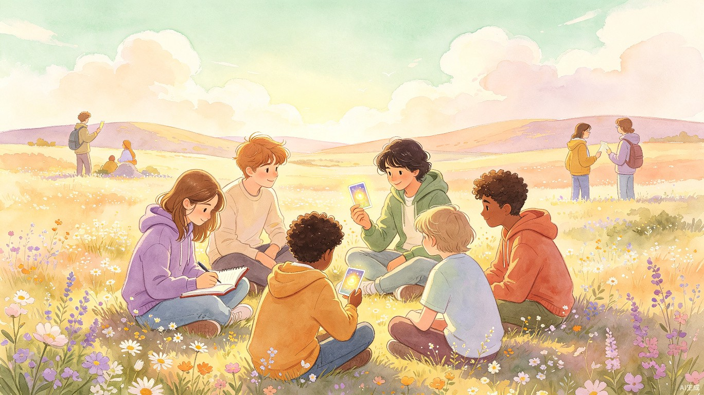

《情绪旷野》是一款面向青少年的AI情绪陪伴与行动引导工具。它不只是倾听烦恼，更是通过多元事物重建青少年与世界的联结，帮助他们看见人生万千可能。
从倾听到行动，五步完成一次情绪陪伴闭环。每一步都经过精心设计，确保青少年在安全、温暖的环境中获得真正的帮助。
flowchart TD
A["📝 写下心事
青少年自由表达内心感受"] --> B["🤖 AI理解困扰
语义分析 + 情绪分级"]
B --> C{"🃏 收到支持卡片"}
C --> C1["理解卡
翻译你的处境"]
C --> C2["行动卡
今天就能做的事"]
C --> C3["求助卡
专业资源推荐"]
C1 --> D["✅ 完成一个小行动
具象化、可衡量"]
C2 --> D
C3 --> D
D --> E["🌿 沉淀成长记录
积累正向足迹"]
style A fill:#e8f5e9,stroke:#7BAE7F,color:#3D3A36
style B fill:#f3e5f5,stroke:#C4A4D4,color:#3D3A36
style C fill:#fff3e0,stroke:#E8B89D,color:#3D3A36
style C1 fill:#e8f5e9,stroke:#7BAE7F,color:#3D3A36
style C2 fill:#f3e5f5,stroke:#C4A4D4,color:#3D3A36
style C3 fill:#fce4ec,stroke:#c88a8a,color:#3D3A36
style D fill:#e8f5e9,stroke:#7BAE7F,color:#3D3A36
style E fill:#fff8e1,stroke:#d4c47a,color:#3D3A36
系统根据用户输入的语义特征，将情绪状态分为三个安全等级，对应不同的响应策略和干预措施。
| 级别 | 情绪特征 | 典型表达 | 响应策略 |
|---|---|---|---|
| 🟢 绿色 | 日常烦恼、轻微低落、短期压力 | "今天考试没考好""和朋友吵架了" | 温暖回应 + 行动卡片推荐 |
| 🟡 黄色 | 持续焦虑、自我否定、社交回避 | "我什么都做不好""没人理解我" | 深度共情 + 专业资源引导 |
| 🔴 红色 | 自伤倾向、极度绝望、重度抑郁 | "活着没意思""不想再坚持了" | 紧急安全干预 + 求助热线推送 |
AI能够精准识别青少年面临的四大核心困境主题，并据此推荐最合适的支持内容。
系统结合情绪严重程度和困境主题类型两个维度，通过智能向量匹配，为每位青少年推荐最贴合当前状态的支持内容和行动方案。千人千面，精准关怀。
内容库覆盖线上与线下、安静与活跃、个人与社交等多个维度，确保每位青少年都能找到适合自己的支持方式。
针对三种典型困境场景，系统会生成不同类型的支持卡片。以下展示完整的卡片内容示例：
| 困境类型 | 理解卡 | 行动卡 | 求助卡 |
|---|---|---|---|
| 学业压力 | "你现在承受的不只是成绩的压力，更是'我够不够好'的疑问。这些情绪说明你在乎自己的人生，这本身就是一种力量。" | "今天花10分钟，写下三件你擅长的与成绩无关的事。" | "如果你觉得压力让你喘不过气，可以拨打心理援助热线，和专业人士聊聊。" |
| 校园排挤 | "被孤立的感觉真的很难受。但请记住，不是你不值得被喜欢，而是你还没有遇到对的伙伴。这种感觉是暂时的。" | "今天尝试对一个人微笑或说一句善意的话。哪怕很小，也是你在主动建立联结。" | "如果你正在被持续欺负或排挤，学校有专门的心理老师和社工可以帮助你。" |
| 虚无冷漠 | "对一切提不起兴趣，可能不是你懒，而是你正在经历情绪的低谷期。这不是你的错，很多人都会经历。" | "今天不需要做任何'有用'的事。允许自己在窗边坐着，观察天空五分钟就好。" | "如果你觉得这种状态持续了很久，建议告诉信任的大人，或联系专业心理咨询师。" |
根据不同困境维度，系统会从全维度内容库中智能匹配最适合的资源。例如：
每一次互动、每一个完成的小行动，都会沉淀为看得见的成长足迹。通过游戏化的正向反馈机制，让青少年真切感受到自己在慢慢变好。
用户在探索不同支持内容时，会逐步解锁五大主题的拼图碎片，每完成一个主题即可拼出完整的治愈画卷。
将成长进程与城市探索结合，用户每完成一组行动，就能在虚拟地图上点亮一个地点。从"校园"出发，途经"公园""书店""美术馆"，最终点亮整座城市的温暖角落。
正向积分不是评判工具，而是成长的见证。完成行动、记录感受、探索新主题都能获得积分和徽章。
每次成长记录自动汇入个人电子手账，精美的版式设计让回顾成为一件愉悦的事。手账包含情绪轨迹图、行动记录、拼图收集进度、成就墙等内容，是专属于青少年的成长纪念册。
系统内置多层高危关键词和行为模式检测，覆盖以下场景：
社区分享区域采用 7:3 内容安全算法——70% AI自动审核 + 30% 人工抽检。所有用户生成内容在展示前经过敏感词过滤和语义安全评估，确保社区环境的健康与安全。
选择AI作为核心驱动，并非追赶技术潮流，而是因为青少年心理健康领域的特殊需求，只有AI才能真正满足。
系统采用模块化微服务架构，确保各功能模块独立可扩展，同时通过统一的中间层实现数据互通。
flowchart TB
U["📱 用户端
小程序 / Web"] --> GW["API 网关"]
subgraph Core["核心服务层"]
GW --> NLU["语义理解引擎
情绪分级 + 主题识别"]
GW --> REC["智能推荐引擎
双维度向量匹配"]
GW --> ACT["行动引导模块
卡片生成 + 进度追踪"]
end
subgraph Support["支撑层"]
NLU --> KB["知识库
困境主题 + 内容库"]
REC --> VDB["向量数据库
用户画像 + 偏好模型"]
ACT --> GAM["游戏化引擎
积分 + 徽章 + 拼图"]
end
subgraph Safety["安全层"]
NLU --> SAF["安全检测引擎
高危关键词 + 语义分析"]
SAF --> HOT["紧急响应模块
热线推送 + 人工介入"]
end
KB --> DB[(数据库)]
VDB --> DB
GAM --> DB
style U fill:#e8f5e9,stroke:#7BAE7F,color:#3D3A36
style GW fill:#fff3e0,stroke:#E8B89D,color:#3D3A36
style NLU fill:#f3e5f5,stroke:#C4A4D4,color:#3D3A36
style REC fill:#f3e5f5,stroke:#C4A4D4,color:#3D3A36
style ACT fill:#f3e5f5,stroke:#C4A4D4,color:#3D3A36
style SAF fill:#fce4ec,stroke:#c88a8a,color:#3D3A36
style HOT fill:#fce4ec,stroke:#c88a8a,color:#3D3A36
| 模块 | 技术方向 | 说明 |
|---|---|---|
| 语义理解 | 大语言模型 + 微调 | 基于通用大模型，针对青少年语言表达和心理健康领域进行微调 |
| 情绪分级 | 多标签分类模型 | 结合关键词匹配和语义分类，实现绿/黄/红三级精准判定 |
| 智能推荐 | 向量检索 + 规则引擎 | 双维度（情绪 x 主题）向量匹配，辅以安全规则过滤 |
| 安全检测 | 规则引擎 + 语义分析 | 硬编码高危关键词库 + 语义层面的危险性评估 |
| 用户端 | 小程序 + 响应式Web | 优先适配微信小程序，同步提供Web端访问 |
作为面向未成年人的心理健康产品，合规性是产品设计的第一准则。我们在以下方面严格遵守相关法律法规：
从Demo到产品，从工具到生态，《情绪旷野》有着清晰的成长路线图。